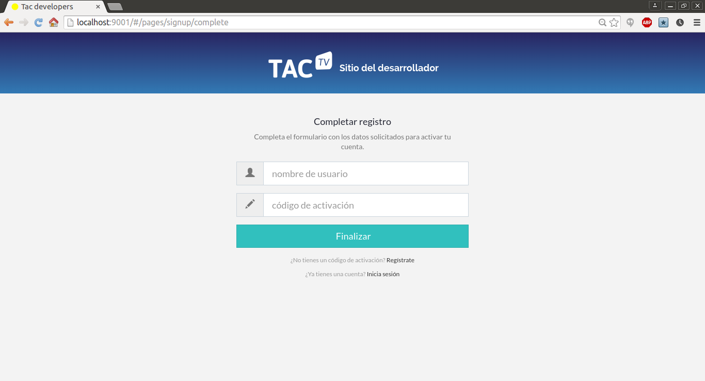
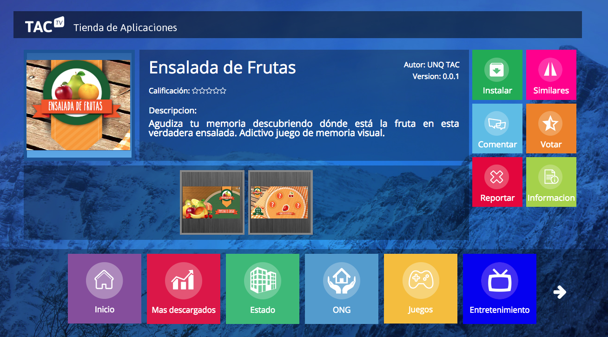
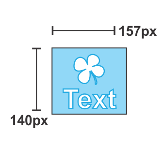
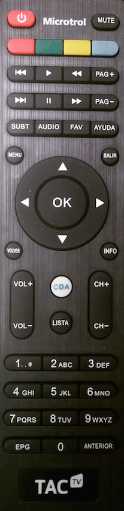

El sitio de desarrollador es una herramienta para el desarrollador de aplciaciones TAC-TV que permite al mismo administrar en forma ágil sus aplicaciones y ser asistido en el proceso de publicación de aplicaciones.
El siguiente documento describe el sitio de desarrollador TAC. Nos mostrará los conceptos generales y en particular el proceso de publicación de aplicaciones TAC-TV.
Si el desarrollador ya tiene una cuenta de desarrollo debe ingresar con su usuario y clave esto le permitirá acceder al panel de administración de sus aplicaciones.
Si aún no es un usuario desarrolador registrado en la pantalla de Ingreso debe seleccionar la opción Registrate abajo del ingreso de usuario y clave. El proceso de registración le pedira unos datos necesarios para el registro entre ellos un email válido dónde recibirá un mail con un link y código de activación.

Si ya pose el código puede ingresar directamente el código para finalizar el proceso.

La publicación de aplicaciones, o nuevas versiones de las mismas, es un proceso paso a paso que asiste al desarrollador en dicha tarea. La tienda tiene distintos componentes que se muestran en base a la información ingresada en el proceso de publicación (screenshots, íconos, descripción, etc). Esta información es relevante para que el usuario TAC-TV encuentre atractiva la aplicación y entienda perfectamente su propósito.
A continuación se muestra los componentes principales de una aplicación en la Tienda TAC-TV.
Logos simple y dobles. El tamaño de los logos es arbitrario y seleccionado por la tienda al momento de ingresar.

Detalle de aplicación.

Un TPK es un paquete de instalación de la TAC. El primer paso de la publicación de una aplicación es subir el TPK de donde se obtienen ciertos datos de la aplicación.

El paso 2 permite verificar que los valores del TPK son correctos. En caso afirmativo el desarrollador continuará con la publicación. En caso contrario deberá generar un nuevo TPK y volver a comenzar el proceso.

Una vez confirmado el TPK se procede a la carga de la información multimedia que se mostrará en la tienda.
El ícono se mostrará en la tienda de aplicaciones cuando se ingrese al detalle de la aplicación.

Medidas sugeridas del ícono:

En este paso se sube el logo simple que se mostrará en la tienda en las distintas categorías. Los logo son fundamentalmente importante, así como el nombre de la aplicación, para atraer al usuario TAC-TV.
Medidas sugeridas del logo simple:

En este paso se pide subir el logo doble que se mostrará en la tienda en las distintas categorías.
Medidas sugeridas del logo doble:

En este paso se suben las capturas de pantalla relevantes de la aplicación. Es importante una buena selección imágenes que sea representativo de la aplicación.

Medidas sugeridas de las capturas de pantalla:

Una vez ingresada toda la información la aplicación queda pendiente de aprobación. Es importante entender que las aplicaciones una vez publicadas por el desarrollador pasan por un proceso de aprobación que puede implicar la corrección de ciertos aspectos de la aplicación.
Las aplicaciones de la TAC-TV son aplicaciones HTML5 estándar, esto es, no pueden utilizar Flash, Silverlight u otros plugins. El desarrollo se realiza sobre Chromium 41 o superior y se debe contemplar que la aplicación debe estar diseñada para una resolución de 720p y para interacción con un control remoto.
El mapeo de las teclas sigue el estándar W3C https://lists.w3.org/Archives/Public/public-web-and-tv/2011May/att-0039/vk-for-tv.html.

Actualmente las herramientas utilizadas por nuestro equipo de desarrollo incluyen el uso de:
Pero cualquiero otro framework como jQuery, Backbone.js, Polymer, Enyo, etc. La selección dependerá de la experiencia previa del equipo de desarrollo y gusto personal.
La estructura de un paquete de instalación TAC (TPK) es simple. La misma está compuesta de un archivo manifest.json que contiene la información referida a la aplicación.
El TPK es en última instancia un archivo tar.gz con la siguiente estructura básica para el caso de aplicaciones web tradicionales:
+
|_ manifest.json
|_ icon.png
En el caso que la aplicación este autocontenida tendrá las carpetas y contenido correspondientes.
La estructura básica del json del manifeste se muestra en el siguiente ejemplo de una aplicación de Trivia. en schemamanifest.json se encuentra la especificación completa.
{
"vendor": "UNQ",
"id": "ar.edu.unq.utics.tac.triviar",
"components": [
{
"type": "app",
"id": "ar.edu.unq.utics.tac.triviar",
"name": "Triviar",
"description": "Triviar es un juego educativo didáctico de preguntas y respuestas. Triviar te permite jugar con tus amigos en la misma TAC o en línea con otros jugadores. Empezá a jugar y demostrá todo lo que sabes!",
"version": "0.0.1",
"main": "http://tiendatac.minplan.gob.ar/triviar",
"icon": "icon.png",
"categories": ["Tiempo Libre", "Juegos"],
"dependencies": [
"ar.edu.unlp.info.lifia.tvd.system"
]
}
],
"vendor-url": "http://www.unq.edu.ar/",
"version": "0.0.1",
"platform": "all",
"api-level": "1.0"
}
Se provee la siguiente utilidad para la generación de paquetes para la TAC (TPK) y la metadata para las aplicaciones desarrolladas por la UNQ.
Para la validación del manifest.json se requiere primero la instalación de las siguientes herramientas:
$ gem install json_schema
Linux
$ sudo apt-get install jshon
OSX
$ brew install jshon
En caso de no encontrarse el script procederá sin la validación correspondiente.
$ ./packager.sh carpeta nombre
El script se obtiene de packager.sh
Donde, carpeta es la carpeta raíz donde reside la metadata del paquete (manifest.json) y nombreel nombre del TPK a generar.